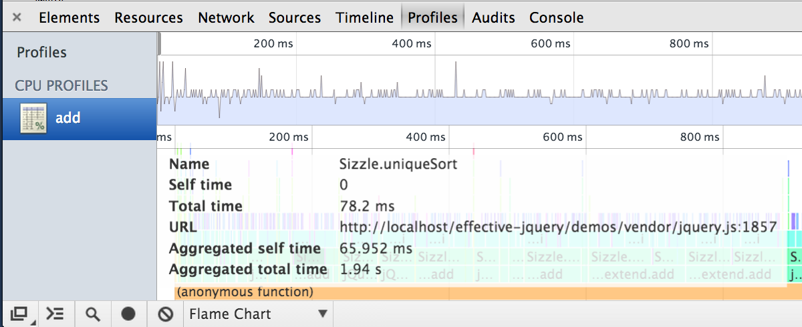
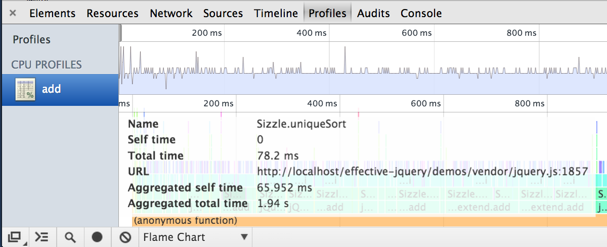

Effective jQuery
Patterns for maintainability and performance
Did you hear about the new car that was made entirely out of trees?
Yeah, it was rejected because it wooden move.
1. Write code like you spend fuel
Adapted from Doug Neiner's Contextual jQuery series
Initializing JavaScript
Lazy init autocomplete demo
Lazy init an autocomplete widgets
Lazy init many autocomplete widgets
Lazy init datepickers
Lazy init datepicker demo
Lazy init dialogs
Lazy init dialog demo
Lazy init form validation
Lazy init form validation demo
heise.de two clicks for more privacy
2. Write code like you don't know the road
Someone is going to mess up the HTML
Flexible draggable handle demo
Traversing example
Flexible over brittle traversing methods
Use flexible methods!
- prevAll > prev
- nextAll > next
- closest > parent
- find > children
Flexible over brittle traversing example
Flexible over brittle selectors
Use flexible selectors!
3. Write code like you avoid traffic jams
Why does this take >2 seconds?!
Use profiler to find out!
 


Runs in <60ms!
4. Combine tools like you'd park and ride
Custom tooltip and animated page scroll demo
custom tooltip with CSS transitions
custom tooltip with CSS transitions
Fallback to jQuery animations
For supported properties
Animated page scroll
5. Customize widgets like customizing a car
Flick theme, original CSS
Flick theme, custom CSS


Recap
- Write code like you spend fuel
- Write code like you don't know the road
- Write code like you avoid traffic jams
- Combine tools like you'd park and ride
- Customize widgets like customizing a car